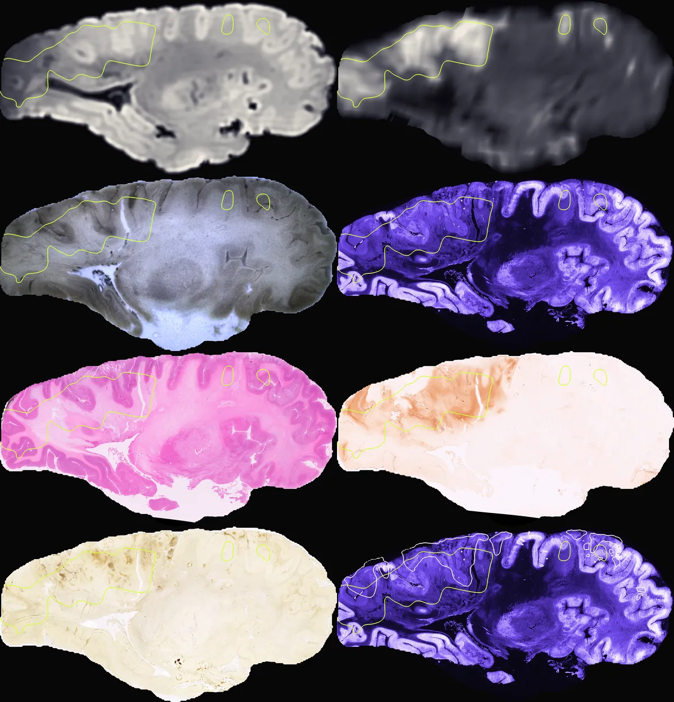
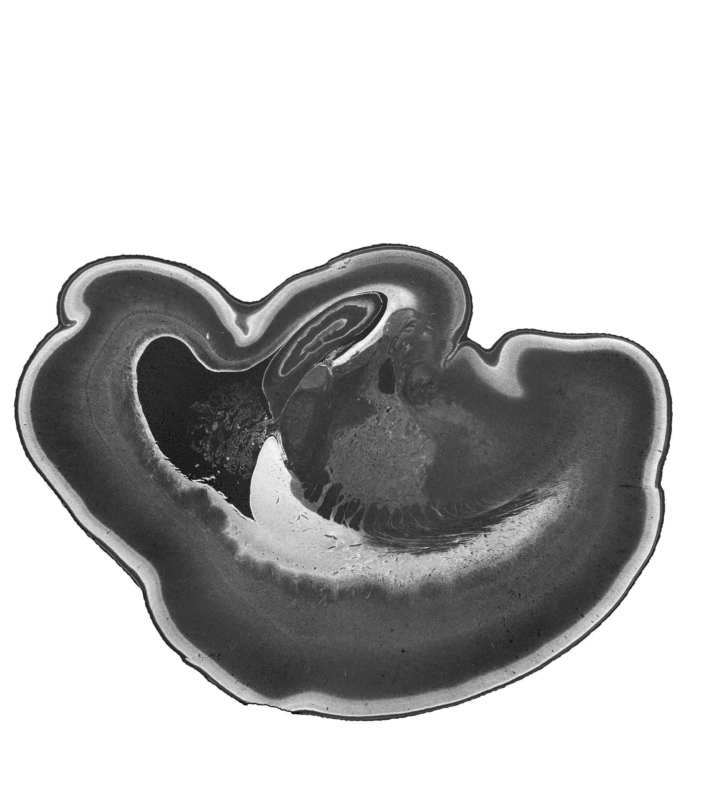
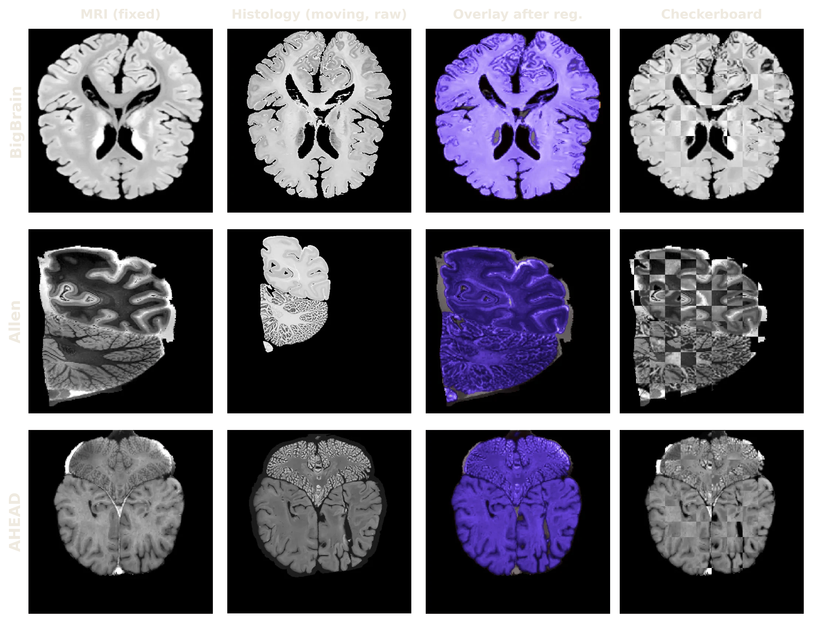
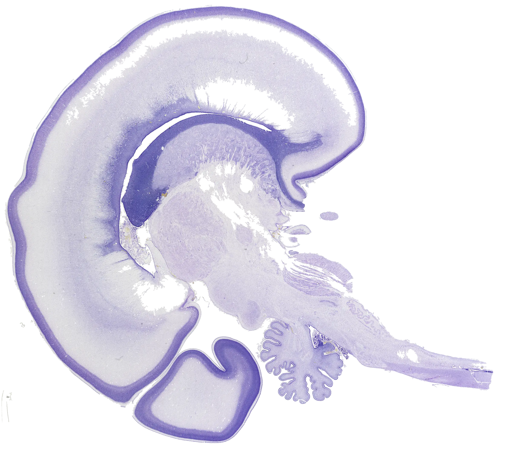
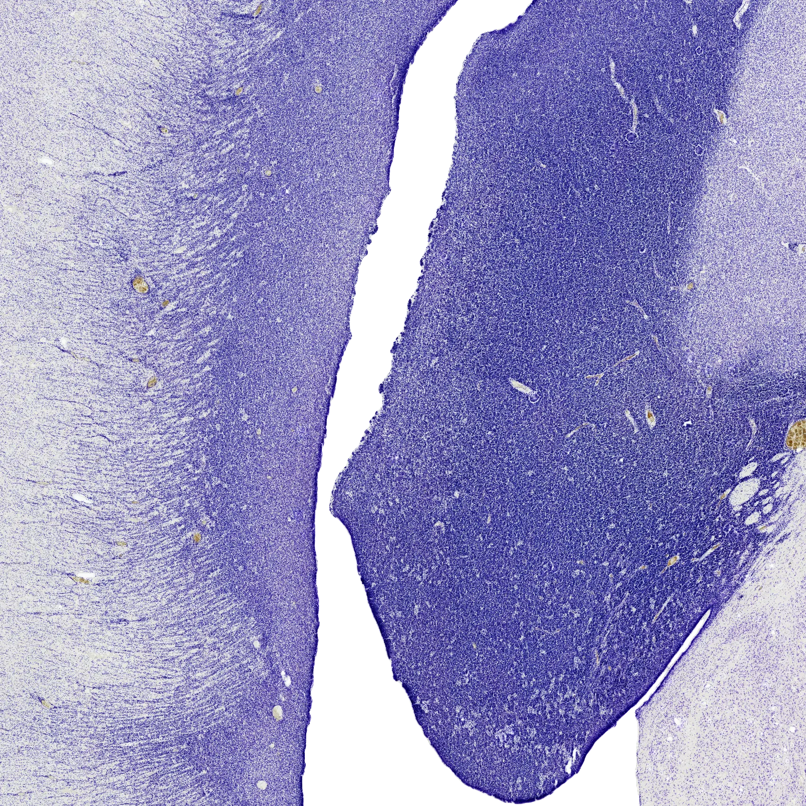
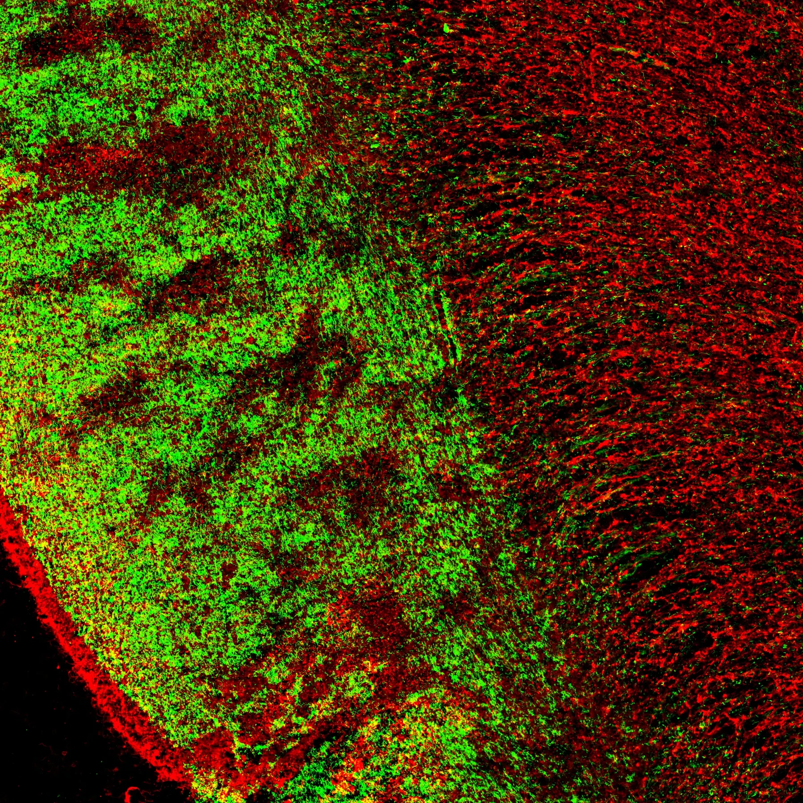
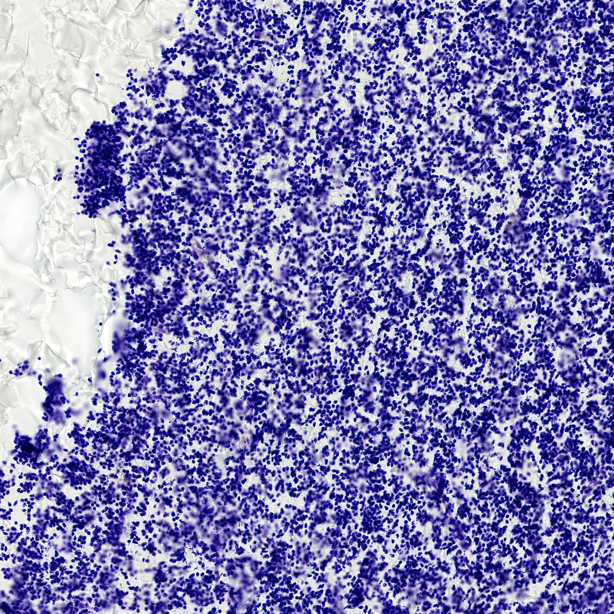

Computational neuroscience · Brain imaging · AI
Jignesh Mistry
Research Associate · Sudha Gopalakrishnan Brain Centre, IIT Madras
Visiting researcher · ACE Lab, McGill University
I build computational tools that make the human brain easier to see and analyze, from whole-brain MRI down to single cells under the microscope.
GitHub See my research Publications Contact
- MLMI 2026 · poster, MICCAI 2026 satellite events
- 14–24 weeks · fetal brains reconstructed from serial sections

BigBrain, a whole human brain imaged at 20 µm, rendered live in your browser.
About
“Mistry, trying to solve the Mystery of the human brain.”

I'm a computational neuroscientist: a Research Associate at the Sudha Gopalakrishnan Brain Centre, IIT Madras, and currently a visiting researcher in Alan C. Evans's ACE Lab at McGill University, one of the homes of BigBrain. I build computational methods to map the human brain from cells to the whole organ: stacking thousands of serial sections into 3D brains, registering them to MRI, and measuring how cells and layers change as the fetal brain develops.
Before this I worked with Keith St. Lawrence's group at Western University, measuring blood flow in the adult brain with near-infrared light, from outside the skull. Now I look at the brain from the inside, one section at a time. Next, I want to trace neuronal pathways at micron resolution through myelin, and understand how the human brain develops and wires itself up before birth.
Recent
- Now · Visiting researcher, ACE Lab, McGill University, Montreal
- Poster · BigBrain Workshop 2026
- Poster · MAIN 2026, Montreal AI and Neuroscience
- Poster · MLMI 2026, MICCAI workshop
Research
A brain after a stroke
One human brain followed from the clinic to the microscope: diffusion MRI in life, MRI after death, block-face images as it was cut, and stained sections (Nissl, H&E, immunostains), all registered into one space. From the C-Stroke atlas of the Sudha Gopalakrishnan Brain Centre; my part here was fitting the block-face stack into the MRI.

From BigBrain to small brains
I study the human brain at every size: from BigBrain, a whole adult brain cut into 7,404 sections, down to the smallest brains of all, fetal brains from 14 weeks of gestation.
Human Fetal Neurodevelopment
How the human brain builds itself before birth, studied in high-resolution histology of fetal brains.
These are the five public DHARANI fetal brains, each reconstructed in 3D from serial Nissl sections (the 14-week brain with VALIS, the others with the mcmadras stacking pipeline) and drawn at true relative size.
- 14
- 17
- 21
- 22
- 24
14 gestational weeks

Project
whereismyslice
Localizes human brain histology sections in 3D MRI space with cross-modal embeddings, trained on synthetic BigBrain + MRI pairs with no manual labels. Retrieves matching MRI slices and flags misordered, flipped or damaged sections.
Nissl histology
T1 MRI
0% close
Drag the blade into the brain until your section matches this one.
An illustration, not the model: your browser already knows the target plane. Both volumes are the same 24-week brain: the MRI in its native shape, placed rigidly, so one blade cuts the same anatomy in each.
Research
Histology ↔ MRI Registration
Automated, annotation-free alignment of human brain histology sections to MRI volumes. Learn the Metric, Not the Deformation: A Small Contrastive Encoder for Cross-Modal Histology–MRI Registration. Accepted as a poster at MLMI 2026, MICCAI 2026 Satellite Events (Springer LNCS).

Same method, other brains
MRI, histology, overlay after registration and checkerboard. Rows: BigBrain, Allen, AHEAD (zero-shot).

The same 24-week brain, one Nissl section.
Research
Ganglionic Eminence
Mapping the ganglionic eminence, the transient fetal structure that gives rise to cortical interneurons, in the developing human brain.
The 24-week brain is cut open along a sagittal plane through the ganglionic eminence, the dense band of cells on the wall of the lateral ventricle.


Research
What lives in the ganglionic eminence
Two immunostained neighbouring sections of another fetal brain, overlaid in green and red: elongated migrating cells and their processes streaming out of the eminence.

Research
Cytoarchitecture
Quantifying gradual transitions between cortical areas using learned image embeddings.
BorderLands
Measuring gradual cytoarchitectonic transitions in embedding space.


Cell bodies send out axons. In the mature brain, myelin wraps them. Stain the myelin instead of the cells, and the pathways appear.
Research
Myelin-Based Connectomics
Tracing the brain's actual fibre pathways from myelin-stained sections, as ground truth beyond MRI tractography.
Streamlines traced through the white matter of one myelin-stained section of a human brain. Colour is the fibre direction in the section plane.
Direction in the section plane: red horizontal, cyan vertical.


Same section, same brain
0.5 µm per pixel
The same 24-week brain, one Nissl section: from the whole section into the ganglionic eminence and down to its cells.

Project
Image processing playground
A testbed for classic image-processing algorithms and their effect on pre- and post-processing pipelines.
Selected publications
- Learn the Metric, Not the Deformation: A Small Contrastive Encoder for Cross-Modal Histology–MRI Registration. Machine Learning in Medical Imaging (MLMI 2026), MICCAI Workshop. Accepted; to appear in Springer LNCS. Poster
- Using depth-enhanced diffuse correlation spectroscopy and near-infrared spectroscopy to isolate cerebral hemodynamics during transient hypotension. Neurophotonics 10(2), 025013, 2023. DOI
- Characterization of cerebral macro- and microvascular hemodynamics during transient hypotension. Journal of Applied Physiology 135(4), 717–725, 2023. DOI
- Importance of depth-enhanced optical methods for measuring cerebral hemodynamics during transient hypotension. European Conferences on Biomedical Optics (Proc. SPIE 12628), 126280P, 2023. DOI
- Assessing extracerebral contamination in cerebral blood flow pulsatility measured by diffuse correlation spectroscopy. Optical Tomography and Spectroscopy of Tissue XV (Proc. SPIE 12376), 112–117, 2023. DOI
Full list on Google Scholar.
One pixel of the scan, 0.5 µm across